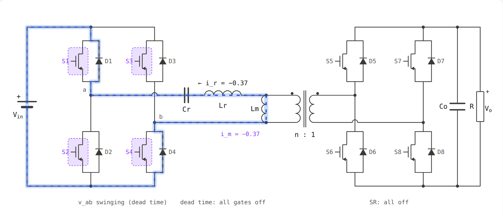
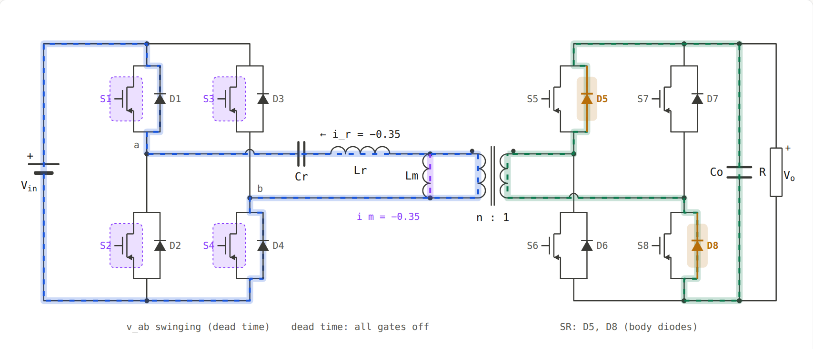
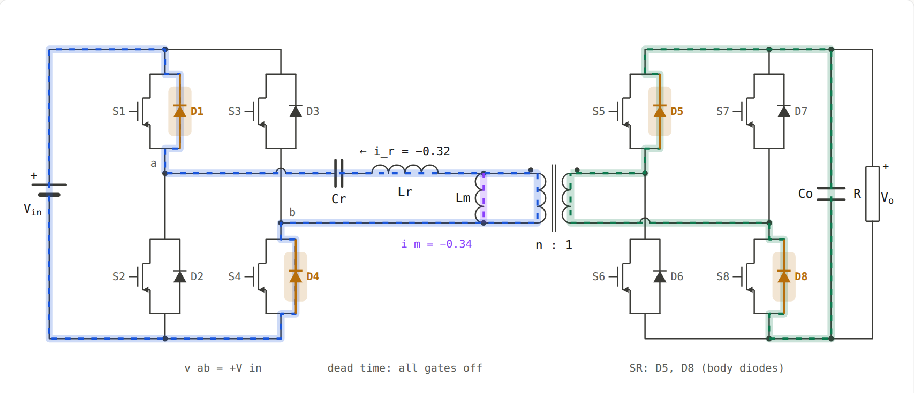
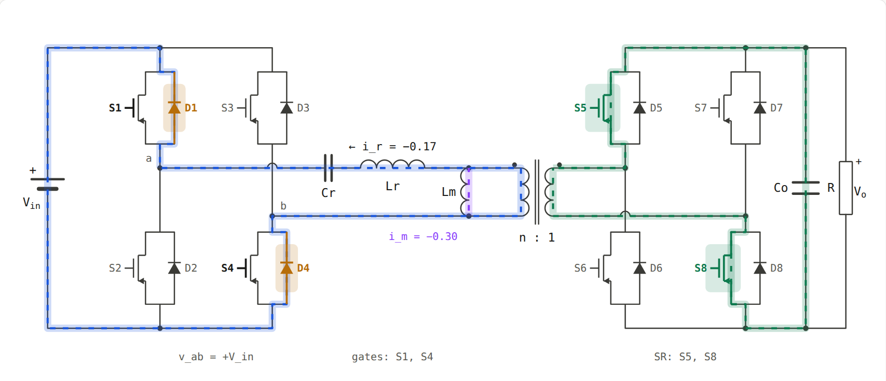
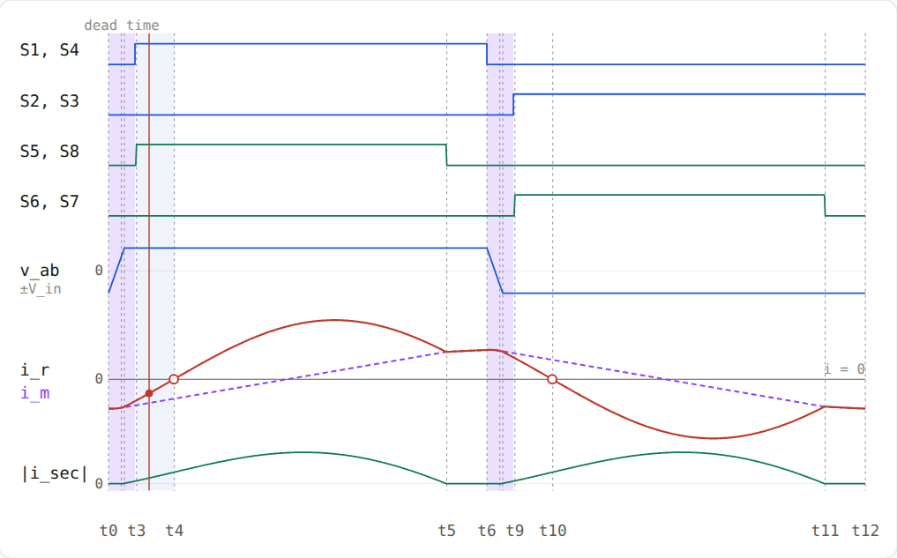
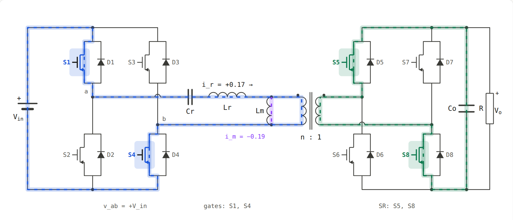
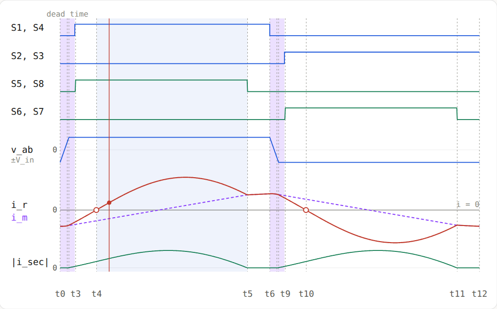
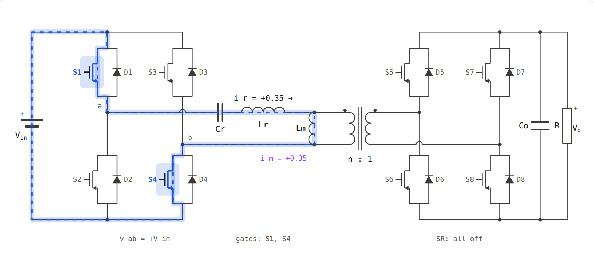
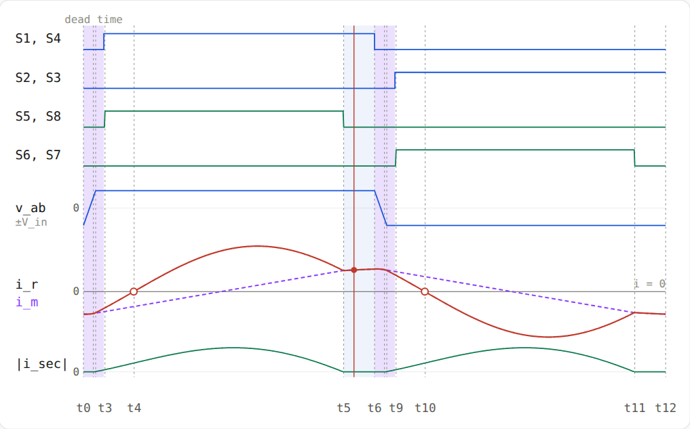

<title>تحلیل بازه‌های LLC</title>
<meta name="viewport" content="width=device-width, initial-scale=1, viewport-fit=cover">
<link rel="preconnect" href="https://fonts.googleapis.com">
<link rel="stylesheet" href="https://fonts.googleapis.com/css2?family=Vazirmatn:wght@400;500;700&family=IBM+Plex+Mono:wght@400;500;600&display=swap">
<style>
:root {
  --bg: #faf9f7;
  --panel: #ffffff;
  --panel2: #f2f1ed;
  --border: rgba(0,0,0,0.09);
  --text: #1a1a18;
  --text2: #55554f;
  --text3: #8c8c84;
  --blue: #1a56db;
  --blue-dim: rgba(26,86,219,0.10);
  --green: #0d7a4e;
  --green-dim: rgba(13,122,78,0.10);
  --amber: #a8620a;
  --amber-dim: rgba(183,110,10,0.12);
  --purple: #7a35e0;
  --purple-dim: rgba(138,63,252,0.10);
  --fa: 'Vazirmatn', Tahoma, 'Segoe UI', sans-serif;
  --mono: 'IBM Plex Mono', ui-monospace, Menlo, monospace;
}
@media (prefers-color-scheme: dark) {
  :root:not([data-theme="light"]) {
    color-scheme: dark;
    --bg: #131412; --panel: #1b1c1a; --panel2: #242522;
    --border: rgba(255,255,255,0.10);
    --text: #ecebe6; --text2: #b0afa7; --text3: #7d7c75;
    --blue: #7aa2ff; --blue-dim: rgba(122,162,255,0.14);
    --green: #45c790; --green-dim: rgba(69,199,144,0.14);
    --amber: #f0a646; --amber-dim: rgba(240,166,70,0.14);
    --purple: #b58cff; --purple-dim: rgba(181,140,255,0.14);
  }
}
:root[data-theme="dark"] {
  color-scheme: dark;
  --bg: #131412; --panel: #1b1c1a; --panel2: #242522;
  --border: rgba(255,255,255,0.10);
  --text: #ecebe6; --text2: #b0afa7; --text3: #7d7c75;
  --blue: #7aa2ff; --blue-dim: rgba(122,162,255,0.14);
  --green: #45c790; --green-dim: rgba(69,199,144,0.14);
  --amber: #f0a646; --amber-dim: rgba(240,166,70,0.14);
  --purple: #b58cff; --purple-dim: rgba(181,140,255,0.14);
}
* { box-sizing: border-box; }
body { margin: 0; background: var(--bg); color: var(--text); font: 16px/1.95 var(--fa); }
.wrap { max-width: 980px; margin: 0 auto; padding-inline: 20px; padding-block: 28px 70px; display: grid; gap: 34px; }
header { display: grid; gap: 10px; }
.eyebrow { font-size: 13px; color: var(--text3); }
h1 { margin: 0; font-size: clamp(24px, 3.6vw, 32px); line-height: 1.5; font-weight: 700; text-wrap: balance; }
h2 { margin: 0; font-size: 21px; line-height: 1.6; font-weight: 700; text-wrap: balance; }
h3 { margin: 0; font-size: 16.5px; font-weight: 700; color: var(--text); }
p { margin: 0; }
.lede { color: var(--text2); font-size: 17px; max-width: 70ch; }
section { display: grid; gap: 14px; }
.prose { display: grid; gap: 12px; max-width: 74ch; }
ul, ol { margin: 0; padding-inline-start: 24px; display: grid; gap: 6px; }
.m { direction: ltr; unicode-bidi: isolate; font-family: var(--mono); font-size: 0.9em; white-space: nowrap; }
.eq { direction: ltr; text-align: left; font-family: var(--mono); font-size: 14.5px; background: var(--panel2); border-radius: 8px; padding: 12px 16px; overflow-x: auto; white-space: pre; line-height: 1.8; }
.panel { background: var(--panel); border: 1px solid var(--border); border-radius: 12px; }
.box { padding: 16px 18px; display: grid; gap: 10px; }
.note { border-inline-start: 4px solid var(--amber); background: var(--amber-dim); padding: 12px 16px; border-radius: 8px; }
.key { border-inline-start: 4px solid var(--green); background: var(--green-dim); padding: 12px 16px; border-radius: 8px; }
.concepts { display: grid; grid-template-columns: repeat(2, minmax(0, 1fr)); gap: 12px; }
@media (max-width: 760px) { .concepts { grid-template-columns: 1fr; } }
.concepts .panel { padding: 14px 16px; display: grid; gap: 6px; align-content: start; }
.concepts h3 { font-size: 15.5px; }
.concepts p { font-size: 15px; color: var(--text2); }
table { border-collapse: collapse; width: 100%; font-size: 14.5px; }
th, td { text-align: start; padding: 9px 12px; border-bottom: 1px solid var(--border); vertical-align: top; }
th { font-size: 13px; color: var(--text3); font-weight: 500; }
.tbl { overflow-x: auto; }
.tbl table { min-width: 640px; }
.chip { display: inline-block; font-family: var(--mono); font-size: 13px; font-weight: 600; padding: 1px 7px; border-radius: 5px; direction: ltr; unicode-bidi: isolate; }
.c-s { color: var(--blue); background: var(--blue-dim); }
.c-d { color: var(--amber); background: var(--amber-dim); }
.c-r { color: var(--green); background: var(--green-dim); }
.c-m { color: var(--purple); background: var(--purple-dim); }
.iv { padding: 20px; display: grid; gap: 16px; }
.iv-head { display: flex; flex-wrap: wrap; gap: 10px 14px; align-items: baseline; }
.iv-tag { font-family: var(--mono); font-weight: 600; font-size: 14px; color: var(--blue); background: var(--blue-dim); padding: 4px 10px; border-radius: 6px; direction: ltr; }
.imgs { display: grid; grid-template-columns: minmax(0, 1.25fr) minmax(0, 1fr); gap: 12px; direction: ltr; }
@media (max-width: 800px) { .imgs { grid-template-columns: 1fr; } }
.imgs figure { margin: 0; display: grid; gap: 4px; }
.imgs img { width: 100%; height: auto; border: 1px solid var(--border); border-radius: 8px; background: #fff; }
.imgs figcaption { direction: rtl; font-size: 13px; color: var(--text3); }
.grid2 { display: grid; grid-template-columns: repeat(2, minmax(0, 1fr)); gap: 14px 22px; }
@media (max-width: 760px) { .grid2 { grid-template-columns: 1fr; } }
.grid2 > div { display: grid; gap: 6px; align-content: start; }
.path { display: flex; flex-wrap: wrap; gap: 4px 6px; align-items: center; direction: ltr; justify-content: flex-end; font-family: var(--mono); font-size: 13.5px; }
.path span { background: var(--panel2); padding: 2px 8px; border-radius: 5px; }
.path i { font-style: normal; color: var(--text3); }
nav.toc { padding: 14px 18px; display: grid; gap: 6px; }
nav.toc a { color: var(--blue); text-decoration: none; }
nav.toc a:hover { text-decoration: underline; }
a:focus-visible { outline: 2px solid var(--blue); outline-offset: 2px; }
</style>

<main class="wrap" dir="rtl" lang="fa">
  <header>
    <div class="eyebrow">پوشهٔ 2.LLC · همراه صفحهٔ انیمیشن «LLC Full-Bridge Operation»</div>
    <h1>تحلیل کامل بازه‌به‌بازهٔ مبدل LLC تمام‌پل با یکسوساز سنکرون</h1>
    <p class="lede">این متن همان مداری را توضیح می‌دهد که در صفحهٔ انیمیشن دیدید: پل کامل اکتیو S1 تا S4 در اولیه، تانک تشدید Cr و Lr و Lm، ترانسفورماتور n:1، و یکسوساز سنکرون S5 تا S8 در ثانویه. اول مفاهیم پایه را مرور می‌کنیم. بعد یک سیکل کلیدزنی را به شش بازه تقسیم می‌کنیم و برای هر بازه می‌گوییم کدام کلید روشن است، جریان از کجا می‌گذرد، ولتاژها چقدرند، چه معادله‌ای حاکم است و چرا بازه تمام می‌شود.</p>
  </header>

  <nav class="panel toc" aria-label="فهرست">
    <b>فهرست</b>
    <a href="#basics">۱. مفاهیم پایه‌ای که لازم دارید</a>
    <a href="#circuit">۲. اجزای مدار و جهت‌های مثبت</a>
    <a href="#summary">۳. نمای کلی یک سیکل</a>
    <a href="#iv1">۴. بازه‌های ۱ تا ۶ (نیم‌سیکل اول)</a>
    <a href="#half2">۵. نیم‌سیکل دوم</a>
    <a href="#design">۶. نتیجه‌ها و فرمول‌های طراحی</a>
  </nav>

  <section id="basics">
    <h2>۱. مفاهیم پایه‌ای که لازم دارید</h2>
    <div class="concepts">
      <div class="panel">
        <h3>سلف: جریانش ناگهانی عوض نمی‌شود</h3>
        <p>رابطهٔ سلف <span class="m">v = L·di/dt</span> است. ولتاژ روی سلف شیب جریان را تعیین می‌کند. اگر کلیدی باز شود، سلف جریانش را نگه می‌دارد و راه دیگری برای آن پیدا می‌کند. کل ZVS از همین خاصیت می‌آید.</p>
      </div>
      <div class="panel">
        <h3>خازن: ولتاژش ناگهانی عوض نمی‌شود</h3>
        <p>رابطهٔ خازن <span class="m">i = C·dv/dt</span> است. برای اینکه ولتاژ خازن عوض شود باید بار الکتریکی <span class="m">Q = C·ΔV</span> به آن داده یا از آن گرفته شود.</p>
      </div>
      <div class="panel">
        <h3>ماسفت سه مسیر دارد</h3>
        <p>۱) <b>کانال</b>: وقتی گیت روشن است، در هر دو جهت جریان می‌برد و مثل مقاومت کوچک <span class="m">Rds(on)</span> است. ۲) <b>دیود بدنه</b>: همیشه هست و فقط از سورس به درین هدایت می‌کند (حدود ۰٫۷ ولت افت). ۳) <b>خازن خروجی Coss</b>: بین درین و سورس. وقتی کلید خاموش است و ولتاژش عوض می‌شود، این خازن شارژ یا دشارژ می‌شود.</p>
      </div>
      <div class="panel">
        <h3>ZVS یعنی چه و چرا مهم است</h3>
        <p>ZVS یعنی ماسفت وقتی روشن شود که ولتاژ درین‌سورسش تقریباً صفر است. اگر با ولتاژ V روشن شود، انرژی <span class="m">½·Coss·V²</span> داخل کلید تلف می‌شود، و این در هر سیکل تکرار می‌شود. پس تلفات با فرکانس زیاد می‌شود. ZVS این تلفات را حذف می‌کند و فرکانس بالا را ممکن می‌کند.</p>
      </div>
      <div class="panel">
        <h3>ZCS یعنی چه</h3>
        <p>ZCS یعنی قطعه وقتی خاموش شود که جریانش صفر شده است. برای دیود یا یکسوساز یعنی بازیابی معکوس (reverse recovery) نداریم. در LLC زیر فرکانس تشدید، یکسوساز سنکرون با ZCS خاموش می‌شود.</p>
      </div>
      <div class="panel">
        <h3>Dead time</h3>
        <p>در هر پایه، کلید بالا و پایین هرگز نباید با هم روشن باشند (اتصال کوتاه ورودی). برای همین بعد از خاموش کردن یک جفت، مدت کوتاهی همه خاموش‌اند. در این مدت جریان سلف ولتاژ نقاط میانی را جابه‌جا می‌کند. در این شبیه‌سازی dead time برابر ۳٫۵٪ دوره است.</p>
      </div>
      <div class="panel">
        <h3>دو فرکانس تشدید</h3>
        <p>وقتی یکسوساز هدایت می‌کند، Lm به ولتاژ خروجی «قفل» است و فقط Lr و Cr تشدید می‌کنند: <span class="m">fr = 1/(2π√(Lr·Cr))</span>. وقتی یکسوساز خاموش است، Lm هم وارد تشدید می‌شود: <span class="m">fm = 1/(2π√((Lr+Lm)·Cr))</span>، که خیلی کندتر است.</p>
      </div>
      <div class="panel">
        <h3>نقش Lm</h3>
        <p>Lm اندوکتانس مغناطیس‌کنندگی ترانس است. جریان آن، i<sub>m</sub>، به خروجی نمی‌رسد و توان منتقل نمی‌کند. ولی همین جریان است که در dead time خازن‌های Coss را شارژ و دشارژ می‌کند و ZVS را ممکن می‌کند. Lm کوچک‌تر یعنی ZVS مطمئن‌تر، ولی تلفات هدایتی بیشتر.</p>
      </div>
    </div>
  </section>

  <section id="circuit">
    <h2>۲. اجزای مدار و جهت‌های مثبت</h2>
    <div class="prose">
      <ul>
        <li><b>V<sub>in</sub></b>: ولتاژ DC ورودی.</li>
        <li><b>S1 تا S4</b>: پل کامل اکتیو اولیه. <span class="chip c-s">S1</span> و <span class="chip c-s">S2</span> پایهٔ چپ‌اند (نقطهٔ میانی a). <span class="chip c-s">S3</span> و <span class="chip c-s">S4</span> پایهٔ راست‌اند (نقطهٔ میانی b). دیودهای بدنهٔ آن‌ها D1 تا D4 هستند. کلیدها به صورت قطری با هم کار می‌کنند: S1·S4 با هم و S2·S3 با هم، هر جفت ۵۰٪ دوره.</li>
        <li><b>v<sub>ab</sub></b>: ولتاژ بین a و b. وقتی S1·S4 روشن‌اند، a به مثبت و b به منفی وصل است، پس <span class="m">vab = +Vin</span>. وقتی S2·S3 روشن‌اند، <span class="m">vab = −Vin</span>. پس پل یک موج مربعی ±V<sub>in</sub> می‌سازد.</li>
        <li><b>Cr و Lr</b>: خازن و سلف سری تشدید. Cr مؤلفهٔ DC را هم بلوکه می‌کند تا ترانس اشباع نشود.</li>
        <li><b>Lm</b>: اندوکتانس مغناطیس‌کنندگی، موازی با سیم‌پیچ اولیه.</li>
        <li><b>ترانس n:1</b>: ایدئال فرض شده است. جریان ثانویه <span class="m">n·(ir − im)</span> است.</li>
        <li><b>S5 تا S8</b>: یکسوساز سنکرون (اکتیو). S5·S8 با هم برای نیم‌سیکل مثبت و S6·S7 برای نیم‌سیکل منفی.</li>
        <li><b>Co و R</b>: خازن و بار خروجی، با ولتاژ V<sub>o</sub>.</li>
      </ul>
      <p><b>جهت مثبت جریان‌ها:</b> i<sub>r</sub> وقتی مثبت است که از a به سمت Cr و Lr برود (در انیمیشن فلش به راست). i<sub>m</sub> وقتی مثبت است که در Lm از بالا به پایین برود. جریان ثانویه وقتی مثبت است که از سر نقطه‌دار ثانویه بیرون بیاید.</p>
      <p><b>نقطهٔ کار این تحلیل:</b> <span class="m">fs = 0.85·fr</span> (زیر تشدید)، <span class="m">Q = 0.4</span>، <span class="m">Ln = Lm/Lr = 5</span>. بهرهٔ به‌دست‌آمده <span class="m">n·Vo/Vin = 1.10</span> است.</p>
    </div>
  </section>

  <section id="summary">
    <h2>۳. نمای کلی یک سیکل</h2>
    <p class="prose">یک دورهٔ کلیدزنی دو نیمه دارد. در نیمهٔ اول S1·S4 کار می‌کنند و در نیمهٔ دوم S2·S3. هر نیمه شش بازه دارد. نیمهٔ دوم دقیقاً قرینهٔ نیمهٔ اول است، پس شش بازهٔ اول را کامل توضیح می‌دهیم.</p>
    <div class="panel tbl">
      <table>
        <thead><tr><th>بازه</th><th>نام</th><th>اولیه</th><th>ثانویه</th><th>v<sub>ab</sub></th></tr></thead>
        <tbody>
          <tr><td class="m">t0→t1</td><td>گذار Coss، یکسوساز خاموش</td><td>همه خاموش (Coss)</td><td>همه خاموش</td><td class="m">−Vin → +Vin</td></tr>
          <tr><td class="m">t1→t2</td><td>گذار Coss، شروع هدایت ثانویه</td><td>همه خاموش (Coss)</td><td><span class="chip c-d">D5</span> <span class="chip c-d">D8</span> دیود بدنه</td><td class="m">−Vin → +Vin</td></tr>
          <tr><td class="m">t2→t3</td><td>کلمپ دیود بدنه</td><td><span class="chip c-d">D1</span> <span class="chip c-d">D4</span></td><td><span class="chip c-d">D5</span> <span class="chip c-d">D8</span></td><td class="m">+Vin</td></tr>
          <tr><td class="m">t3→t4</td><td>پنجرهٔ ZVS</td><td>گیت S1·S4 روشن، جریان معکوس</td><td><span class="chip c-r">S5</span> <span class="chip c-r">S8</span></td><td class="m">+Vin</td></tr>
          <tr><td class="m">t4→t5</td><td>انتقال توان</td><td><span class="chip c-s">S1</span> <span class="chip c-s">S4</span></td><td><span class="chip c-r">S5</span> <span class="chip c-r">S8</span></td><td class="m">+Vin</td></tr>
          <tr><td class="m">t5→t6</td><td>فقط جریان مغناطیس‌کنندگی</td><td><span class="chip c-s">S1</span> <span class="chip c-s">S4</span></td><td>همه خاموش</td><td class="m">+Vin</td></tr>
        </tbody>
      </table>
    </div>
    <div class="key">نکتهٔ مهم برای خواندن شکل‌ها: در تصاویر، رنگ آبی جریان اولیه و کلید هادی است. نارنجی دیود بدنه است، بنفش جریان Lm یا گذار Coss، و سبز جریان ثانویه یا ماسفت SR هادی. برچسب پررنگ یعنی گیت آن کلید روشن است.</div>
  </section>

  <!-- Interval 1 -->
  <section id="iv1">
    <h2>۴. بازه‌های نیم‌سیکل اول</h2>
    <article class="panel iv">
      <div class="iv-head"><span class="iv-tag">t0 → t1</span><h3>بازهٔ ۱: شروع dead time و گذار خازن‌های Coss (یکسوساز خاموش)</h3></div>
      <div class="imgs">
        <figure><figcaption>مدار: هر چهار کلید اولیه خاموش‌اند (کادر بنفش خط‌چین یعنی Coss در حال شارژ و دشارژ است). انیمیشن برای ساده‌سازی مسیر را از کنار D1 و D4 رسم کرده است. در واقعیت در این بازه جریان به خازن‌های Coss می‌رود، نه به دیودها.</figcaption></figure>
        <figure><figcaption>شکل موج: ناحیهٔ بنفش dead time است. v<sub>ab</sub> در حال بالا رفتن است.</figcaption></figure>
      </div>
      <div class="grid2">
        <div>
          <b>قبل از این بازه چه بود؟</b>
          <p>در بازهٔ آخر نیم‌سیکل قبل، S2 و S3 روشن بودند و فقط جریان مغناطیس‌کنندگی می‌چرخید. در لحظهٔ t0 این جریان، i<sub>r</sub> = i<sub>m</sub>، در بیشترین مقدار منفی خود است (در انیمیشن حدود <span class="m">−0.37</span>، به واحد نرمال‌شده).</p>
        </div>
        <div>
          <b>در t0 چه اتفاقی می‌افتد؟</b>
          <p>گیت S2 و S3 خاموش می‌شود. گیت S1 و S4 هنوز روشن نشده است، چون dead time است. پس هر چهار کلید اولیه خاموش‌اند.</p>
        </div>
      </div>
      <div class="prose">
        <p><b>جریان کجا می‌رود؟</b> سلف‌ها (Lr و Lm، که الان سری‌اند) نمی‌گذارند جریان ناگهانی صفر شود. جریان منفی یعنی جریان از سمت تانک به نقطهٔ a وارد می‌شود. چون هیچ کانالی باز نیست، این جریان فقط می‌تواند به خازن‌های Coss برود:</p>
        <ul>
          <li>خازن Coss کلید <b>S1</b> دشارژ می‌شود. ولتاژ آن از V<sub>in</sub> به صفر می‌رسد.</li>
          <li>خازن Coss کلید <b>S2</b> شارژ می‌شود. ولتاژ آن از صفر به V<sub>in</sub> می‌رسد.</li>
          <li>در پایهٔ راست، همین اتفاق برعکس می‌افتد: Coss کلید S4 دشارژ و Coss کلید S3 شارژ می‌شود.</li>
        </ul>
        <p>نتیجه: ولتاژ نقطهٔ a از صفر به V<sub>in</sub> بالا می‌رود و ولتاژ b از V<sub>in</sub> به صفر پایین می‌آید. پس v<sub>ab</sub> به‌صورت نرم از <span class="m">−Vin</span> به <span class="m">+Vin</span> می‌رود. این جابه‌جایی را کلید انجام نمی‌دهد. جریان سلف انجامش می‌دهد و هیچ تلفاتی ندارد.</p>
        <p><b>ثانویه:</b> ولتاژ روی Lm هنوز کمتر از nV<sub>o</sub> است، پس هیچ‌کدام از قطعات ثانویه بایاس مستقیم نیستند. جریان ثانویه صفر است، <span class="m">ir = im</span>، و بار را فقط Co تغذیه می‌کند.</p>
      </div>
      <div class="eq">charge needed per leg:   Q = 2·Coss·Vin
transition time:         t_tr ≈ 2·Coss·Vin / Im       (Im = |im| at t0)
ZVS condition:           t_tr ≤ t_dead</div>
      <div class="prose">
        <p><b>چرا تمام می‌شود؟</b> با بالا رفتن v<sub>ab</sub>، ولتاژ روی Lm زیاد می‌شود. وقتی به <span class="m">+n·Vo</span> برسد، دیودهای بدنهٔ S5 و S8 بایاس مستقیم می‌شوند و ثانویه شروع به هدایت می‌کند. این لحظه t1 است.</p>
      </div>
      <div class="note"><b>نکتهٔ طراحی:</b> اگر I<sub>m</sub> خیلی کوچک باشد (Lm خیلی بزرگ) یا dead time کوتاه باشد، v<sub>ab</sub> تا آخر dead time به +V<sub>in</sub> نمی‌رسد. آن‌وقت S1·S4 با ولتاژ باقی‌مانده روشن می‌شوند و بخشی از ZVS از دست می‌رود.</div>
    </article>

    <!-- Interval 2 -->
    <article class="panel iv">
      <div class="iv-head"><span class="iv-tag">t1 → t2</span><h3>بازهٔ ۲: ادامهٔ گذار Coss، ثانویه از دیود بدنه شروع به هدایت می‌کند</h3></div>
      <div class="imgs">
        <figure><figcaption>مدار: دیودهای بدنهٔ D5 و D8 در ثانویه هدایت می‌کنند.</figcaption></figure>
        <figure><figcaption>شکل موج: جریان |i<sub>sec</sub>| (سبز پایین) کم‌کم از صفر بالا می‌آید.</figcaption></figure>
      </div>
      <div class="prose">
        <p><b>اولیه:</b> هنوز dead time است و هر چهار کلید خاموش‌اند. گذار Coss ادامه دارد تا v<sub>ab</sub> کاملاً به +V<sub>in</sub> برسد.</p>
        <p><b>ثانویه:</b> ولتاژ Lm به nV<sub>o</sub> رسیده است، پس جریان ثانویه راه افتاده است. ولی گیت S5 و S8 هنوز خاموش است، به دو دلیل:</p>
        <ol>
          <li>کنترلر SR اول باید ببیند که ولتاژ درین‌سورس منفی شده است (یعنی دیود بدنه هدایت می‌کند) و بعد با کمی تأخیر گیت را روشن کند.</li>
          <li>در این مدل، گیت SR در طول dead time اولیه خاموش نگه داشته می‌شود تا ایمن باشد.</li>
        </ol>
        <p>پس جریان ثانویه از <span class="chip c-d">D5</span> و <span class="chip c-d">D8</span> (دیودهای بدنه) عبور می‌کند.</p>
        <p><b>مسیر جریان ثانویه:</b></p>
        <div class="path"><span>secondary (dot)</span><i>→</i><span>D5 ↑</span><i>→</i><span>+ rail</span><i>→</i><span>Co ∥ R</span><i>→</i><span>− rail</span><i>→</i><span>D8 ↑</span><i>→</i><span>secondary (other end)</span></div>
        <p><b>چه تغییری در Lm رخ می‌دهد؟</b> از این لحظه ولتاژ Lm به <span class="m">+n·Vo</span> قفل (کلمپ) شده است. پس i<sub>m</sub> با شیب ثابت و به‌صورت خطی بالا می‌رود. خط‌چین بنفش در شکل موج را ببینید.</p>
      </div>
      <div class="eq">Lm clamped:       dim/dt = +n·Vo / Lm          (linear ramp)
secondary current: i_sec = n·(ir − im)
SR body-diode loss: P ≈ Vf · i_sec           (Vf ≈ 0.7 V, why this interval must be short)</div>
      <div class="prose"><p><b>چرا تمام می‌شود؟</b> وقتی v<sub>ab</sub> کاملاً به +V<sub>in</sub> برسد، دیودهای بدنهٔ اولیه (D1، D4) هدایت را شروع می‌کنند و ولتاژ را همان‌جا نگه می‌دارند (t2).</p></div>
    </article>

    <!-- Interval 3 -->
    <article class="panel iv">
      <div class="iv-head"><span class="iv-tag">t2 → t3</span><h3>بازهٔ ۳: دیودهای بدنهٔ D1 و D4 ولتاژ را روی +V<sub>in</sub> نگه می‌دارند</h3></div>
      <div class="imgs">
        <figure><figcaption>مدار: D1 و D4 در اولیه، D5 و D8 در ثانویه هدایت می‌کنند.</figcaption></figure>
        <figure><figcaption>شکل موج: v<sub>ab</sub> روی +V<sub>in</sub> صاف شده است و هنوز dead time است.</figcaption></figure>
      </div>
      <div class="prose">
        <p><b>اولیه:</b> ولتاژ Coss کلیدهای S1 و S4 به صفر رسیده است. جریان i<sub>r</sub> هنوز منفی است و باید جایی برود. تنها راهش دیودهای بدنهٔ <span class="chip c-d">D1</span> و <span class="chip c-d">D4</span> است:</p>
        <div class="path"><span>tank</span><i>→</i><span>node a</span><i>→</i><span>D1 ↑</span><i>→</i><span>Vin (+)</span><i>→</i><span>Vin (−)</span><i>→</i><span>D4 ↑</span><i>→</i><span>node b</span><i>→</i><span>tank</span></div>
        <p>جریان وارد سر مثبت V<sub>in</sub> می‌شود. یعنی در این لحظه انرژی از تانک <b>به منبع برمی‌گردد</b>. توان لحظه‌ای ورودی <span class="m">vab · ir</span> منفی است.</p>
        <p><b>مهم‌ترین نکتهٔ این بازه:</b> ولتاژ درین‌سورس S1 و S4 فقط حدود <span class="m">−0.7 V</span> است (افت دیود). اگر الان گیتشان روشن شود، تقریباً هیچ انرژی‌ای تلف نمی‌شود. این همان ZVS است.</p>
        <p><b>ثانویه:</b> مثل بازهٔ قبل است: D5 و D8 هدایت می‌کنند و i<sub>m</sub> خطی بالا می‌رود.</p>
      </div>
      <div class="prose"><p><b>چرا تمام می‌شود؟</b> dead time تمام می‌شود و گیت S1·S4 روشن می‌شود (t3). در همین لحظه کنترلر SR هم گیت S5·S8 را روشن می‌کند.</p></div>
    </article>

    <!-- Interval 4 -->
    <article class="panel iv">
      <div class="iv-head"><span class="iv-tag">t3 → t4</span><h3>بازهٔ ۴: پنجرهٔ ZVS، گیت روشن ولی جریان هنوز معکوس است</h3></div>
      <div class="imgs">
        <figure><figcaption>مدار: گیت S1·S4 روشن است. در ثانویه S5·S8 با کانال هدایت می‌کنند.</figcaption></figure>
        <figure><figcaption>شکل موج: i<sub>r</sub> (قرمز) هنوز زیر خط صفر است و به طرف صفر بالا می‌رود.</figcaption></figure>
      </div>
      <div class="prose">
        <p><b>اولیه:</b> گیت S1 و S4 روشن شده است. چون i<sub>r</sub> هنوز منفی است، جریان در جهت معکوس (از سورس به درین) عبور می‌کند. در عمل وقتی گیت روشن است، این جریان معکوس بیشتر از <b>کانال</b> ماسفت می‌گذرد، چون افتش (I·Rds) کمتر از دیود است. انیمیشن آن را با برچسب دیود بدنه نشان می‌دهد. نکتهٔ اصلی این است که ولتاژ کلید صفر است. روشن شدن در این لحظه بدون تلفات است.</p>
        <p>انرژی هنوز به V<sub>in</sub> برمی‌گردد، چون <span class="m">vab = +Vin</span> است ولی <span class="m">ir &lt; 0</span>. این همان بخش «گردشی» یا راکتیو جریان است.</p>
        <p><b>ثانویه:</b> گیت <span class="chip c-r">S5</span> و <span class="chip c-r">S8</span> روشن شده است و جریان ثانویه از کانالشان عبور می‌کند. SR هم با ZVS روشن شده است، چون قبلش دیود بدنه هدایت می‌کرد. تلفات حالا <span class="m">i²·Rds(on)</span> است به‌جای <span class="m">Vf·i</span>. هدف اصلی یکسوساز سنکرون همین است.</p>
      </div>
      <div class="eq">tank (Lm clamped, only Lr–Cr resonate):
  Lr · dir/dt = Vin − vCr − n·Vo
  Cr · dvCr/dt = ir
  → ir is a sine at fr = 1/(2π√(Lr·Cr)), rising here</div>
      <div class="prose"><p><b>چرا تمام می‌شود؟</b> i<sub>r</sub> از صفر عبور می‌کند و مثبت می‌شود (t4، دایرهٔ توخالی روی خط صفر در شکل موج).</p></div>
    </article>

    <!-- Interval 5 -->
    <article class="panel iv">
      <div class="iv-head"><span class="iv-tag">t4 → t5</span><h3>بازهٔ ۵: انتقال توان</h3></div>
      <div class="imgs">
        <figure><figcaption>مدار: S1·S4 در جهت مستقیم هدایت می‌کنند و S5·S8 جریان را به خروجی می‌دهند.</figcaption></figure>
        <figure><figcaption>شکل موج: i<sub>r</sub> سینوسی بالا می‌رود و فاصلهٔ آن تا i<sub>m</sub> جریان خروجی است.</figcaption></figure>
      </div>
      <div class="prose">
        <p><b>اولیه:</b> حالا i<sub>r</sub> مثبت است و <span class="chip c-s">S1</span> و <span class="chip c-s">S4</span> در جهت عادی (درین به سورس) هدایت می‌کنند:</p>
        <div class="path"><span>Vin (+)</span><i>→</i><span>S1</span><i>→</i><span>a</span><i>→</i><span>Cr</span><i>→</i><span>Lr</span><i>→</i><span>transformer ‖ Lm</span><i>→</i><span>b</span><i>→</i><span>S4</span><i>→</i><span>Vin (−)</span></div>
        <p>در گرهٔ بعد از Lr، جریان i<sub>r</sub> دو قسمت می‌شود. i<sub>m</sub> از Lm می‌گذرد و فقط مغناطیس‌کنندگی است. <span class="m">ir − im</span> از ترانس به ثانویه می‌رود و توان می‌برد.</p>
        <p><b>ثانویه:</b> جریان <span class="m">n·(ir − im)</span> از S5·S8 عبور می‌کند و Co و بار را تغذیه می‌کند:</p>
        <div class="path"><span>secondary (dot)</span><i>→</i><span>S5 (channel)</span><i>→</i><span>Co ∥ R</span><i>→</i><span>S8 (channel)</span><i>→</i><span>secondary</span></div>
        <p><b>شکل جریان:</b> Lm همچنان به nV<sub>o</sub> قفل است، پس فقط Lr و Cr تشدید می‌کنند. i<sub>r</sub> تکه‌ای از یک سینوس با فرکانس f<sub>r</sub> است. i<sub>m</sub> خطی بالا می‌رود. فاصلهٔ بین منحنی قرمز و خط‌چین بنفش در شکل موج همان جریانی است که به خروجی می‌رسد.</p>
      </div>
      <div class="eq">dim/dt = n·Vo / Lm
Lr·dir/dt = Vin − vCr − n·Vo
output current = n·(ir − im)     → Io = average over the period
power in = Vin · ir  (> 0 now)</div>
      <div class="prose">
        <p><b>چرا تمام می‌شود؟</b> نیم‌سیکل سینوس تشدید <span class="m">1/(2fr)</span> طول می‌کشد. نیم‌دورهٔ کلیدزنی <span class="m">1/(2fs)</span> طول می‌کشد. چون <span class="m">fs &lt; fr</span> است، نیم‌سیکل تشدید <b>زودتر</b> تمام می‌شود. i<sub>r</sub> پایین می‌آید تا به i<sub>m</sub> برسد. در آن لحظه جریان ثانویه صفر می‌شود (t5).</p>
      </div>
      <div class="key">اگر <span class="m">fs = fr</span> باشد، این بازه دقیقاً تا آخر نیم‌دوره طول می‌کشد و بازهٔ ۶ حذف می‌شود. این بهترین نقطهٔ کار LLC است و LLC-DCX همیشه اینجا کار می‌کند. اگر <span class="m">fs &gt; fr</span> باشد، کلیدها قبل از تمام شدن این بازه عوض می‌شوند و SR مجبور است با جریان خاموش شود.</div>
    </article>

    <!-- Interval 6 -->
    <article class="panel iv">
      <div class="iv-head"><span class="iv-tag">t5 → t6</span><h3>بازهٔ ۶: فقط جریان مغناطیس‌کنندگی، یکسوساز خاموش است</h3></div>
      <div class="imgs">
        <figure><figcaption>مدار: جریان فقط از Lm می‌گذرد و ثانویه کاملاً قطع است.</figcaption></figure>
        <figure><figcaption>شکل موج: i<sub>r</sub> و i<sub>m</sub> روی هم افتاده‌اند و |i<sub>sec</sub>| صفر است.</figcaption></figure>
      </div>
      <div class="prose">
        <p><b>در t5 چه شد؟</b> جریان ثانویه به صفر رسید. کنترلر SR همین را تشخیص می‌دهد و گیت S5·S8 را در جریان صفر خاموش می‌کند. این <b>ZCS</b> است: هیچ بازیابی معکوسی نیست و تلفات خاموشی ندارد.</p>
        <p>اگر SR دیرتر خاموش شود، چون کانال ماسفت دوطرفه است، جریان برعکس می‌شود و انرژی را از Co به ترانس برمی‌گرداند. برای همین زمان خاموش کردن SR خیلی مهم است.</p>
        <p><b>اولیه:</b> S1·S4 هنوز روشن‌اند و <span class="m">vab = +Vin</span>. ولی حالا ولتاژ Lm کمتر از nV<sub>o</sub> است و Lm دیگر قفل نیست. پس <span class="m">ir = im</span> است و Lm به Lr سری می‌شود. تشدید حالا بین <span class="m">(Lr + Lm)</span> و Cr است، با فرکانس خیلی پایین f<sub>m</sub>. در این بازهٔ کوتاه جریان تقریباً صاف و کمی صعودی است.</p>
        <p><b>خروجی:</b> در این بازه هیچ انرژی‌ای به خروجی نمی‌رسد و بار را فقط Co تغذیه می‌کند.</p>
      </div>
      <div class="eq">(Lr + Lm) · dir/dt = Vin − vCr        (ir = im)
fm = 1/(2π√((Lr+Lm)·Cr))  ≪ fr
im reaches its peak Im here  ≈ n·Vo / (4·Lm·fs)</div>
      <div class="prose">
        <p><b>چرا این بازه مهم است؟</b> i<sub>m</sub> در این بازه به بیشترین مقدار مثبت خود می‌رسد (<span class="m">+Im</span>). این جریان ذخیره‌شده دقیقاً همان چیزی است که در بازهٔ بعد (t6، dead time بعدی) Coss کلیدها را جابه‌جا می‌کند و به S2·S3 ZVS می‌دهد. پس بدون این جریان ZVS نداریم.</p>
        <p><b>چرا تمام می‌شود؟</b> نیم‌دوره تمام می‌شود و گیت S1·S4 خاموش می‌شود (t6). بازهٔ ۱ برای نیم‌سیکل دوم شروع می‌شود.</p>
      </div>
      <div class="note"><b>چرا زیر تشدید بهره بیشتر از ۱ است؟</b> در بازهٔ ۶ و در گذارها، Lm در تشدید شرکت می‌کند. این کار ولتاژ Cr را بیشتر نوسان می‌دهد و در نیم‌سیکل بعد ولتاژ بیشتری به ترانس می‌رسد. در این نقطهٔ کار بهره ۱٫۱۰ است. هر چه f<sub>s</sub> پایین‌تر برود بهره بیشتر می‌شود، تا جایی که به ناحیهٔ خازنی برسیم و ZVS از دست برود.</div>
    </article>
  </section>

  <section id="half2">
    <h2>۵. نیم‌سیکل دوم (t6 تا t12)</h2>
    <p class="prose">نیم‌سیکل دوم دقیقاً قرینه است. همان شش بازه تکرار می‌شوند، فقط با این جابه‌جایی‌ها:</p>
    <div class="panel tbl">
      <table>
        <thead><tr><th>در نیم‌سیکل اول</th><th>در نیم‌سیکل دوم</th></tr></thead>
        <tbody>
          <tr><td>S1، S4 روشن</td><td>S2، S3 روشن</td></tr>
          <tr><td>دیودهای بدنهٔ D1، D4</td><td>دیودهای بدنهٔ D2، D3</td></tr>
          <tr><td>SR: S5، S8 (و دیودهای D5، D8)</td><td>SR: S6، S7 (و دیودهای D6، D7)</td></tr>
          <tr><td class="m">vab: −Vin → +Vin</td><td class="m">vab: +Vin → −Vin</td></tr>
          <tr><td>i<sub>r</sub> و i<sub>m</sub> مثبت می‌شوند</td><td>i<sub>r</sub> و i<sub>m</sub> منفی می‌شوند</td></tr>
          <tr><td>Lm قفل روی <span class="m">+nVo</span></td><td>Lm قفل روی <span class="m">−nVo</span>، i<sub>m</sub> خطی پایین می‌آید</td></tr>
        </tbody>
      </table>
    </div>
    <p class="prose">در انتهای نیم‌سیکل دوم، i<sub>m</sub> به <span class="m">−Im</span> رسیده است. همان جریانی است که در شروع بازهٔ ۱ دیدیم و ZVS را برای S1·S4 فراهم کرد. پس سیکل بسته می‌شود.</p>
  </section>

  <section id="design">
    <h2>۶. نتیجه‌ها و فرمول‌های طراحی</h2>
    <div class="prose">
      <h3>چه چیزی ZVS کلیدهای اولیه را تضمین می‌کند؟</h3>
      <p>جریان مغناطیس‌کنندگی در لحظهٔ خاموشی باید آن‌قدر بزرگ باشد که در dead time خازن‌های Coss را کامل جابه‌جا کند:</p>
    </div>
    <div class="eq">Im ≈ n·Vo / (4·Lm·fs)
2·Coss·Vin / Im ≤ t_dead
→  Lm ≤ n·Vo·t_dead / (8·Coss·Vin·fs)</div>
    <div class="prose">
      <p>یعنی برای ZVS، Lm نباید از یک حد بزرگ‌تر شود. ولی Lm کوچک یعنی i<sub>m</sub> بزرگ، که همیشه در اولیه می‌چرخد و تلفات هدایتی می‌سازد. طراحی LLC بین همین دو خواسته تعادل برقرار می‌کند.</p>
      <h3>چه چیزی ZCS یکسوساز سنکرون را تضمین می‌کند؟</h3>
      <p>کار کردن در <span class="m">fs ≤ fr</span>. آن‌وقت جریان ثانویه قبل از عوض شدن کلیدها به‌طور طبیعی به صفر می‌رسد (بازهٔ ۵ قبل از پایان نیم‌دوره تمام می‌شود). کنترلر SR فقط باید این لحظه را درست تشخیص دهد.</p>
      <h3>توان کجا منتقل می‌شود؟</h3>
      <p>فقط در بازه‌های ۲ تا ۵، که ثانویه هدایت می‌کند. در بازهٔ ۶ و ابتدای بازهٔ ۱ هیچ توانی به خروجی نمی‌رسد. در بازه‌های ۳ و ۴ هم بخشی از انرژی به V<sub>in</sub> برمی‌گردد. این «جریان گردشی» قیمتی است که برای ZVS می‌پردازیم.</p>
      <h3>خلاصه در یک جمله</h3>
      <p>پل اولیه یک موج مربعی ±V<sub>in</sub> می‌سازد. تانک Lr·Cr آن را به جریان تقریباً سینوسی تبدیل می‌کند. یکسوساز سنکرون این جریان را با تلفات کم یکسو می‌کند. و جریان کوچک Lm در هر dead time ولتاژ کلیدها را جابه‌جا می‌کند تا همهٔ کلیدها بدون تلفات روشن شوند.</p>
    </div>
    <div class="note">یادآوری: این تحلیل روی مدل ایدئال است. قطعات ایدئال‌اند، ترانس نشتی جدا ندارد، ولتاژ خروجی ثابت است و گذار Coss خطی فرض شده است. در مدار واقعی، خازن غیرخطی Coss، اندوکتانس نشتی و تأخیر کنترلر SR شکل موج‌ها را کمی عوض می‌کنند، ولی ترتیب بازه‌ها همین است.</div>
  </section>
</main>
